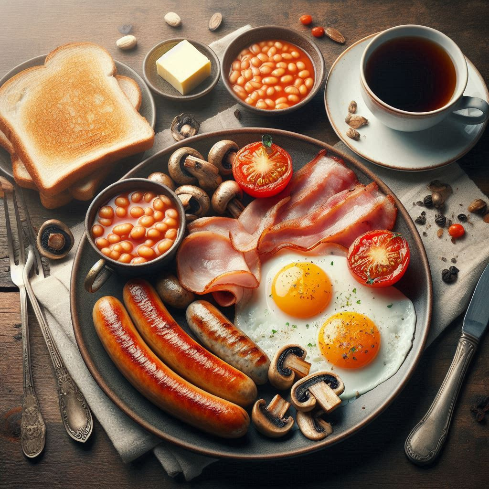

Home
Café da Manhã Inglês (English Breakfast)

Descrição
O tradicional English Breakfast é uma refeição farta e cheia de sabores, perfeita para começar o dia com energia. Este café da manhã, muito popular no Reino Unido, reúne uma combinação de pratos quentes que vão desde salsichas douradas e crocantes fatias de bacon até ovos fritos e tomates grelhados. Acompanhado de feijão cozido e cogumelos salteados, este prato é ideal para quem deseja uma refeição robusta e saborosa. As fatias de pão
torrado com manteiga completam a experiência, oferecendo um toque crocante que se combina perfeitamente com o restante do prato. Sirva com uma xícara de chá preto, e você terá o café da manhã mais tradicional que a Inglaterra tem a oferecer.
Sugestão de acompanhamento: Chá preto, preferencialmente com leite ou uma rodela de limão para dar um toque de frescor.
Ingredientes
- 2 salsichas de café da manhã
- 2 fatias de bacon
- 2 ovos
- 1 tomate maduro
- 1/2 feijão cozido (geralmente em molho de tomate)
- 2 fatias de pão (geralmente torradas)
- Manteiga para a torrada
- Cogumelos frescos (opcional)
- Chá preto (opcional, para beber)
Passo a passo
- Aqueça uma frigideira grande e frite as salsichas até que fiquem douradas e cozidas por dentro (cerca de 10-12 minutos). Retire e reserve.
- Na mesma frigideira, frite o bacon até que fique crocante (cerca de 5 minutos) e reserve.
- Na frigideira, adicione os cogumelos fatiados e frite até que fiquem dourados (cerca de 5 minutos).
- Frite os ovos na frigideira, deixando a gema no ponto desejado (geralmente ovos fritos "moles" ou "duros").
- Corte o tomate ao meio e frite-o rapidamente na frigideira até que fique levemente grelhado.
- Aqueça o feijão cozido em uma panela pequena, mexendo até que fique bem quente.
- Enquanto isso, toste as fatias de pão e passe manteiga por cima.
- Sirva todos os itens em um prato grande e acompanhe com uma xícara de chá preto, se desejar.